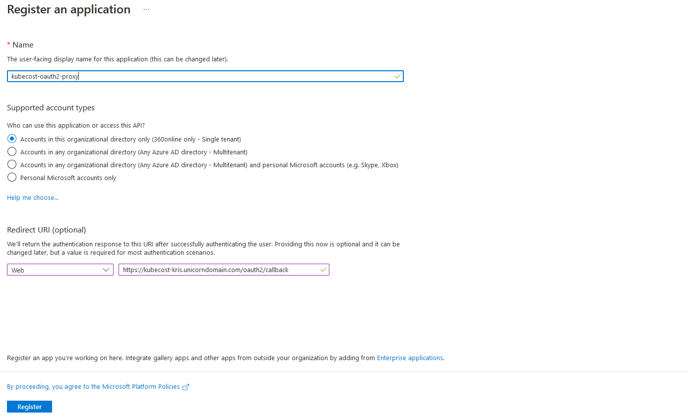
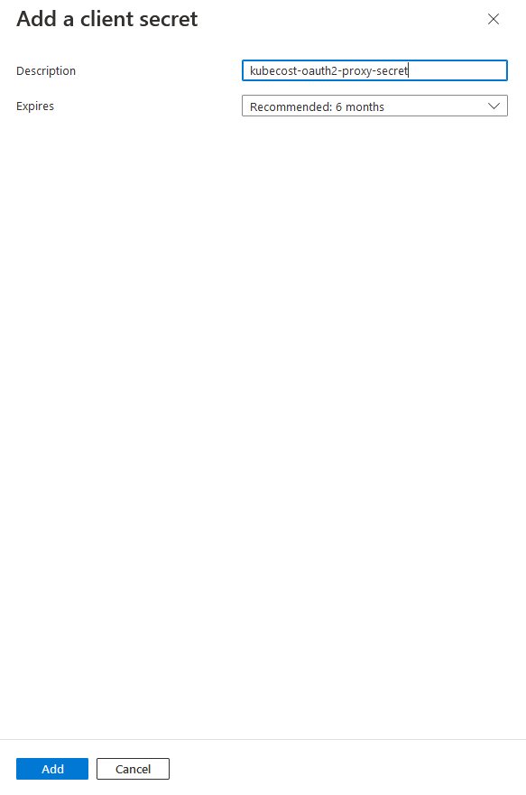
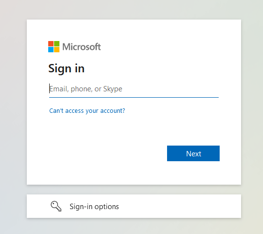

Setting Up OAuth 2.0 Authentication for Applications in AKS With NGINX and OAuth2 Proxy
Introduction and use cases
Today I would like to show how you can set up authentication with OAuth 2.0 for applications that are running in Azure Kubernetes Service with help of NGINX Ingress Controller and OAuth2 Proxy.
There may be multiple reasons for why you would want to implement authentication with OAuth 2.0 this way. For example, you may not want to implement authentication logic in the application itself or, like it was in my case, you want to limit access to a third-party application that you're running in your cluster in case authentication is not natively supported by the application itself (or requires an Enterprise license for the same😃). I was recently working on implementing an open source version of kubecost for cost management in our AKS clusters and the thing is that the open source version of kubecost doesn't natively support authentication. You can enable support for SSO with SAML 2.0 by acquiring an Enterprise version of kubecost which was not applicable in my scenario. Nevertheless, I still wanted to expose kubecost instances so that other teams and business stakeholders can easily access those and check whatever data they need. At the same time I still wanted to limit access and protect the application so I had to look for an alternative solution. And that's where NGINX Ingress Controller and OAuth2 Proxy come into play!😺
With just a few configuration changes in NGINX Ingress Controller and a lightweight proxy application it's possible to easily configure OAuth 2.0 authentication with Azure AD as an identity provider. So let's take a look at how we can do that!🌟
Setting up authentication with OAuth 2.0
I will be using kubecost as an example application in this walkthrough. It's now deployed in an AKS cluster and is exposed without any authentication (yet!) on this example URL: https://kubecost-kris.unicorndomain.com. Now, let's protect it by setting up an OAuth2 Proxy.
In order to do that we will need to perform following steps:
🐾 Create an application in Azure AD which will represent OAuth2 Proxy application that we're going to implement later;
🐾 Update NGINX Ingress configuration for kubecost to enable support for external authentication;
🐾 Configure and deploy OAuth2 Proxy application which will act as a reverse proxy and provide authentication to kubecost with Azure AD;
In addition you will need to have a TLS certificate provisioned both for your application and the OAuth2 Proxy. In my example use case, I'm using cert-manager which is the most popular certificate management application for Kubernetes. Setting up cert-manager is outside of scope for this blog post but it's expected that you have a certificate management application available in order to be able to provision respective TLS certificates. If you want to learn more about cert-manager, you can check this link: cert-manager
Let's get to it!🚀
Create OAuth2 Proxy application in Azure AD
In order to create an OAuth2 Proxy application we need to go to App registrations section in Azure AD and choose New registration. Then provide following properties:
🐾 Name of the Azure AD application. Since I'm setting it up for kubecost, I'll call it kubecost-oauth2-proxy.
🐾 Azure AD single-tenant or multi-tenant account types. In my case there's only one directory being used, therefore I will choose Accounts in this organizational directory only.
🐾 Redirect URI which will represent an application URL that will be receiving an authorization code on behalf of the application. Since we're using an OAuth2 Proxy, a redirect URI in our case is a public URL of your application plus oauth2/callback, i.e. https://kubecost-kris.unicorndomain.com/oauth2/callback
Once all properties are provided, click Register - the application will then be created for you in Azure AD.

Next, we'll need to create a client secret which will allow OAuth2 Proxy to perform authentication on behalf of our application. In Azure AD, navigate to recently created application. In Certificates & secrets section choose New client secret. Then provide following properties:
🐾 Description that explains what the secret will be used for. In my case it's kubecost-oauth2-proxy-secret.
🐾 Expiration lifecycle of the secret. For better security, choose at least the recommended lifecycle which at the moment of writing this blog post is 6 months. If you can automate secret renewal, do choose as short lifecycle as possible.
Once all properties are provided, click Add. Once the client secret is created, do ensure to copy it and save for a later step since the secret will be shown to you only once, right upon creation.

Finally, go to the Overview section of the recently created application in Azure AD and make a note of Application (client) ID and Directory (tenant) ID which we'll need later.
Now we're done with setting everything up in Azure AD - let's prepare our application's Ingress next!😺
Configure NGINX Ingress Controller
In order to be able to expose our application publicly, we need to create an Ingress. Since my kubecost application is already exposed, I have an Ingress resource already which looks something like this:
apiVersion: networking.k8s.io/v1
kind: Ingress
metadata:
name: kubecost-cost-analyzer
namespace: kubecost
annotations:
nginx.ingress.kubernetes.io/affinity: "cookie"
nginx.ingress.kubernetes.io/session-cookie-name: "route"
nginx.ingress.kubernetes.io/session-cookie-hash: "sha1"
nginx.ingress.kubernetes.io/session-cookie-expires: "172800"
nginx.ingress.kubernetes.io/session-cookie-max-age: "172800"
nginx.ingress.kubernetes.io/rewrite-target: /
nginx.ingress.kubernetes.io/proxy-body-size: "2000m"
nginx.ingress.kubernetes.io/proxy-buffer-size: "32k"
nginx.ingress.kubernetes.io/ssl-redirect: "true"
meta.helm.sh/release-name: kubecost
meta.helm.sh/release-namespace: kubecost
labels:
app: cost-analyzer
app.kubernetes.io/instance: kubecost
app.kubernetes.io/managed-by: Helm
app.kubernetes.io/name: cost-analyzer
spec:
ingressClassName: nginx
tls:
- hosts:
- kubecost-kris.unicorndomain.com
secretName: kubecost-cost-analyzer-tls-cert
rules:
- host: kubecost-kris.unicorndomain.com
http:
paths:
- path: /
pathType: Prefix
backend:
service:
name: kubecost-cost-analyzer
port:
number: 9090
Since I've deployed kubecost with Helm and current Ingress belongs to the same release, I've added additional annotations which will let Helm include and manage this Ingress resource as part of the kubecost release. You can read more about adding Kubernetes resources to existing Helm releases here: How to Include New Kubernetes Resource Into Existing Helm Release
Now, the only thing we will need to do to configure support for OAuth 2.0 authentication is to add following annotations to the Ingress object:
🐾 auth-url: Annotation that represents URL to the authentication service where requests must be sent.
nginx.ingress.kubernetes.io/auth-url: "https://[application-hostname]/oauth2/auth"
🐾 auth-signin: Annotation that represents URL to the location of the error page:
nginx.ingress.kubernetes.io/auth-signin: "https://[application-hostname]/oauth2/start?rd=https://[application-hostname]/oauth2/callback"
So, in my example the final kubecost application Ingress definition will look like this:
apiVersion: networking.k8s.io/v1
kind: Ingress
metadata:
name: kubecost-cost-analyzer
namespace: kubecost
annotations:
# OMITTED - ALL ANNOTATIONS AS ABOVE
nginx.ingress.kubernetes.io/auth-url: "https://kubecost-kris.unicorndomain.com/oauth2/auth"
nginx.ingress.kubernetes.io/auth-signin: "https://kubecost-kris.unicorndomain.com/oauth2/start?rd=https://kubecost-kris.unicorndomain.com/oauth2/callback"
labels:
# OMITTED - SAME AS ABOVE
spec:
# OMITTED - SAME AS ABOVE
Configuration of NGINX Ingress is done - finally we're ready to deploy OAuth2 Proxy!🤩
Configure and deploy OAuth2 Proxy
Last thing we'll need to do is to install a proxy application which will authenticate the requests coming into our main application, which in my example case is kubecost. There are many good open source alternatives for such a proxy out there but I can recommend the one called OAuth2 Proxy - it's well maintained and has a big community support. It's also recommended by NGINX. You can find more information in OAuth2 Proxy GitHub and documentation by checking out the links in Additional resources section below.😉
OAuth2 Proxy doesn't have a Helm chart so we'll create a Kubernetes YAML template and include it as part of the kubecost Helm release by adding a few annotations to the OAuth2 Proxy Ingress definition.
But before we do that, we need to make a few preparations first. OAuth2 Proxy requires some information from us in order to work properly:
🐾 Tenant ID, Client ID and Client Secret of an Azure AD application that we've created earlier;
🐾 Cookie secret for session information storage;
Since we've made a note of tenant id, client id and client secret what we need to do now is to generate a cookie secret. Cookie storage is the default storage type used by OAuth2 Proxy to store information about a session in a client-side cookie, therefore setting a cookie secret is mandatory. You can also use Redis as an alternative session storage but it's outside of scope of this blog post. You can read more about OAuth2 Proxy session storage options here: Session Storage
Cookie Secret
It's an important and good practice to always generate a strong secret, using cryptographically secure random number generator and never re-use the same secret across applications! Since cookie secret can be used for sensitive information like storing user session data, in the wrong hands this information can cause a lot of damage and even let attacker get control of the server hosting an application. There are several ways to generate a cookie secret, for example with OpenSSL: openssl rand -hex 32. Once you've generated a secret value, make a note of it, we're going to use it in a second.
Create OAuth2 Proxy secrets in AKS cluster
The last thing we need to do before we can deploy OAuth2 Proxy is to save Client ID, Client Secret and Cookie Secret as Kubernetes Secrets. Of course we could've just written them in plaintext in the Deployment YAML but we're conscious about security, right?😼 We want to keep secrets secret, therefore we'll deploy sensitive values as Kubernetes Secrets.
As an alternative to Kubernetes Secrets in AKS you can save secrets with help of The Azure Key Vault Provider for Secrets Store CSI Driver. Walkthrough of how to do that will be provided in the subsequent blog posts. In current blog post we'll be utilizing Kubernetes Secrets. If you would like to learn more about The Azure Key Vault Provider for Secrets Store CSI Driver, you can check official Microsoft documentation: Use the Azure Key Vault Provider for Secrets Store CSI Driver in an AKS cluster
In AKS cluster where OAuth2 Proxy will be installed, in the namespace where your application is running (in my case it's kubecost), run following commands with kubectl in order to create secrets for the respective values:
kubectl create secret generic client-id --from-literal=oauth2_proxy_client_id=[client-id-value] -n [application-namespace]
kubectl create secret generic client-secret --from-literal=oauth2_proxy_client_secret=[client-secret-value]
-n [application-namespace]
kubectl create secret generic cookie-secret --from-literal=oauth2_proxy_cookie_secret=[cookie-secret-value]
-n [application-namespace]
You can also create Kubernetes Secrets from file by using --from-file instead of --from-literal where you provide the values directly in the command line - you can find more about it here: Managing Secrets using kubectl
Finally we're ready to deploy OAuth2 Proxy!🥳 Below you can find an example of a Deployment YAML that will deploy OAuth2 Proxy as part of the existing Helm release for kubecost application.
Wherever you can see
kubecostmentioned in the example template below, you can replace it with the name of your specific application.
A few things to be aware of:
-
I wouldn't recommend to use the latest container image of any third-party application since it may introduce breaking changes and cause inconsistent application behaviour. Always choose a stable release version and have a good upgrade routine in place to ensure that you're keeping third-party applications up-to-date.
-
Normally, when you want to use OAuth2 Proxy with Azure AD Identity Provider, you would use
--provider=azurein thetemplate.spec.containers.argssection of the Deployment resource in the template below. In release 7.3.0 of OAuth2 Proxy a breaking change was introduced which affected Azure provider and a solution for it is to use a generic OIDC provider instead of Azure provider which I'm using below. You can check this GitHub Issue for more details on this: v7.3.0 breaks azure provider -
In the
template.spec.containers.envsection of the Deployment, we're integrating Kubernetes Secrets for the sensitive values which we created earlier as the environment variables for OAuth2 Proxy. Names of the environment variables should stay as provided in the example since that's what OAuth2 Proxy expects: OAuth2 Proxy - Environment variables
#oauth2-proxy.yaml
apiVersion: apps/v1
kind: Deployment
metadata:
annotations:
meta.helm.sh/release-name: kubecost # can be removed if your application isn\'t deployed through Helm
meta.helm.sh/release-namespace: kubecost # can be removed if your application isn\'t deployed through Helm
labels:
application: kubecost-oauth2-proxy
app.kubernetes.io/managed-by: Helm # can be removed if your application isn\'t deployed through Helm
name: kubecost-oauth2-proxy-deployment
namespace: kubecost
spec:
replicas: 1
selector:
matchLabels:
application: kubecost-oauth2-proxy
template:
metadata:
labels:
application: kubecost-oauth2-proxy
spec:
containers:
- args:
- --provider=oidc
- --azure-tenant=[oauth2-proxy-azure-ad-tenant-id] # Azure AD OAuth2 Proxy application Tenant ID
- --pass-access-token=true
- --cookie-name=_proxycookie # this can be any name of your choice which you would like OAuth2 Proxy to use for the session cookie
- --email-domain=*
- --upstream=file:///dev/null
- --http-address=0.0.0.0:4180
- --oidc-issuer-url=https://login.microsoftonline.com/[oauth2-proxy-azure-ad-tenant-id]/v2.0
name: kubecost-oauth2-proxy
image: quay.io/oauth2-proxy/oauth2-proxy:v7.3.0
imagePullPolicy: Always
env:
- name: OAUTH2_PROXY_CLIENT_ID # keep this name - it\'s required to be defined like this by OAuth2 Proxy
valueFrom:
secretKeyRef:
name: client-id
key: oauth2_proxy_client_id
- name: OAUTH2_PROXY_CLIENT_SECRET # keep this name - it\'s required to be defined like this by OAuth2 Proxy
valueFrom:
secretKeyRef:
name: client-secret
key: oauth2_proxy_client_secret
- name: OAUTH2_PROXY_COOKIE_SECRET # keep this name - it\'s required to be defined like this by OAuth2 Proxy
valueFrom:
secretKeyRef:
name: cookie-secret
key: oauth2_proxy_cookie_secret
ports:
- containerPort: 4180
protocol: TCP
resources:
limits:
cpu: 100m
memory: 128Mi
requests:
cpu: 100m
memory: 128Mi
---
apiVersion: v1
kind: Service
metadata:
annotations:
meta.helm.sh/release-name: kubecost # can be removed if your application isn\'t deployed through Helm
meta.helm.sh/release-namespace: kubecost # can be removed if your application isn\'t deployed through Helm
labels:
application: kubecost-oauth2-proxy
app.kubernetes.io/managed-by: Helm # can be removed if your application isn\'t deployed through Helm
name: kubecost-oauth2-proxy-svc
namespace: kubecost
spec:
ports:
- name: http
port: 4180
protocol: TCP
targetPort: 4180
selector:
application: kubecost-oauth2-proxy
---
apiVersion: networking.k8s.io/v1
kind: Ingress
metadata:
annotations:
nginx.ingress.kubernetes.io/ssl-redirect: "true"
cert-manager.io/cluster-issuer: [cert-manager-cluster-issuer-name]
nginx.ingress.kubernetes.io/proxy-body-size: "2000m"
nginx.ingress.kubernetes.io/proxy-buffer-size: "32k"
meta.helm.sh/release-name: kubecost # can be removed if your application isn\'t deployed through Helm
meta.helm.sh/release-namespace: kubecost # can be removed if your application isn\'t deployed through Helm
labels:
app.kubernetes.io/managed-by: Helm # can be removed if your application isn\'t deployed through Helm
name: kubecost-oauth2-proxy-ingress
namespace: kubecost
spec:
ingressClassName: nginx
tls:
- hosts:
- [application-hostname]
secretName: kubecost-oauth2-proxy-ingress-tls-secret
rules:
- host: [application-hostname]
http:
paths:
- path: /oauth2
pathType: Prefix
backend:
service:
name: kubecost-oauth2-proxy-svc
port:
number: 4180
Once you've verified that configuration and the template look correct you can deploy OAuth2 Proxy in AKS cluster where your application is running with following kubectl command: kubectl apply -f ./my-path-to-template/oauth2-proxy.yaml
And it's done! Now, when you access the application, you will first be redirected to the Microsoft authentication.

All-in-one deployment package
You can find all the Kubernetes YAML deployment templates as well as a PowerShell script that includes all the necessary commands to create an Azure AD application and installs OAuth2 Proxy in my GitHub repo: guidemetothemoon:oauth2-proxy
Additional resources
A few resources I've found useful on this topic:
- Documentation of OAuth2 Proxy open source project: OAuth2 Proxy Docs
- OAuth2 Proxy GitHub: OAuth2 Proxy
- More on SSO with SAML 2.0 support in kubecost: User Management - SSO/SAML/RBAC
- Support for different authentication types in NGINX Ingress Controller including OAuth: External OAUTH Authentication
That's it from me this time, thanks for checking in!
If this article was helpful, I'd love to hear about it! You can reach out to me on LinkedIn, Twitter, GitHub or by using the contact form on this page 😺
Stay secure, stay safe.
Till we connect again!😻